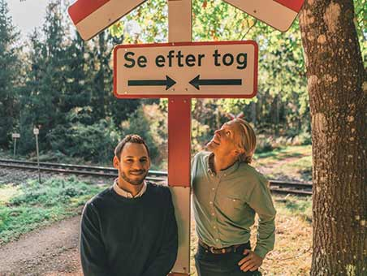

Om os
Danmarks Togrejsebureau
GrønRejs er et dansk rejsebureau, som arrangerer oplevelsesrige togrejser og sammensatte pakkerejser til Europas smukkeste destinationer. Vi ønsker at trække rejsebranchen i en grønnere retning og vi er overbevist om, at rigtig mange gerne vil rejse mere klimavenligt og bidrage til den grønne omstilling, men desværre ikke ved hvor de skal starte. Derfor besluttede vi os for at stifte et rejseselskab, som specialisere sig i togrejser, som er en meget mere klimavenlig rejseform end fly. Vi glæder os til at byde jer velkommen til GrønRejs – uforglemmelige togrejser med grøn samvittighed
Et grønnere alternativ
Mange har en forventning om at der kan spares mange penge ved at arrangere rejsen selv, fremfor at købe en færdig pakkerejse. Det kan det helt sikkert også i mange tilfælde, men hvad man ofte glemmer at tænke over, er den store mængde tid det ofte tager at planlægge en god rejse selv. Regner man sin egen “timeløn” med i planlægningen, kan det hurtigt bedre betale sig at købe sin rejse gennem et rejsebureau og samtidig have ro i maven over at der er styr på alt fra rejseplaner, billetter, transport, indkvartering på hotel osv.
Når du køber en rejse hos GrønRejs – hvad enten det er en en individuel togrejse, en interrail pakkerejse, grupperejse, eller en skræddersyet rejse efter dine ønsker, er du omfattet af rejsegarantifonden og ikke mindst pakkerejseloven og den meget høje forbrugerbeskyttelse der følger med.
GrønRejs blev etableret med henblik på at føre rejsebranchen i en grønnere retning, og samtidigt gør det næmmere at rejse bæredygtigt uden at gå på kompromi med rejsens kvalitet. Vi har derfor samlet Danmarks førende togeksperter, og sammensat togruter til unikke destinationer i Europa. Vi håber i får nogle ufoglemmelige oplevelser med GrønRejs.